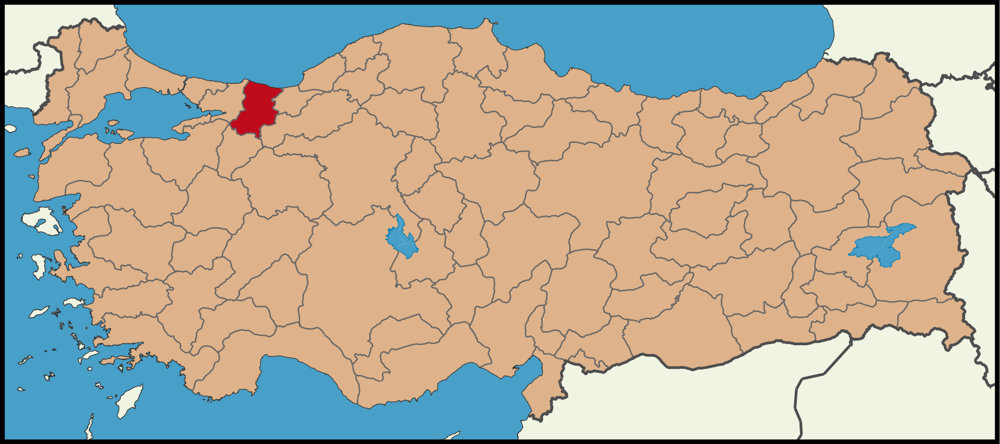
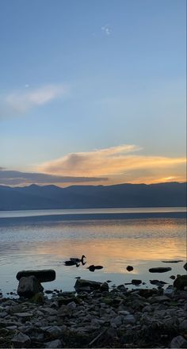
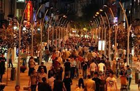
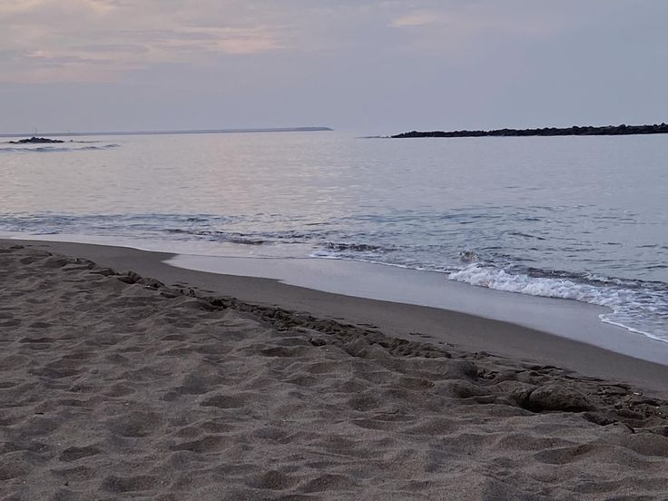
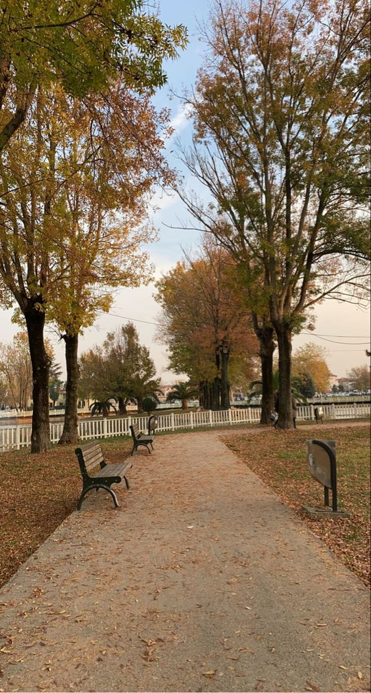

<!doctype html>
<html lang="en">
  <head>
    <meta charset="utf-8">
    <meta name="viewport" content="width=device-width, initial-scale=1, shrink-to-fit=no">
    <link rel="stylesheet" href="https://cdn.jsdelivr.net/npm/bootstrap@4.0.0/dist/css/bootstrap.min.css" integrity="sha384-Gn5384xqQ1aoWXA+058RXPxPg6fy4IWvTNh0E263XmFcJlSAwiGgFAW/dAiS6JXm" crossorigin="anonymous">
    <title>webt</title>
  </head>
  <body>
   
  <script src="https://code.jquery.com/jquery-3.2.1.slim.min.js" integrity="sha384-KJ3o2DKtIkvYIK3UENzmM7KCkRr/rE9/Qpg6aAZGJwFDMVNA/GpGFF93hXpG5KkN" crossorigin="anonymous"></script>
    <script src="https://cdn.jsdelivr.net/npm/popper.js@1.12.9/dist/umd/popper.min.js" integrity="sha384-ApNbgh9B+Y1QKtv3Rn7W3mgPxhU9K/ScQsAP7hUibX39j7fakFPskvXusvfa0b4Q" crossorigin="anonymous"></script>
    <script src="https://cdn.jsdelivr.net/npm/bootstrap@4.0.0/dist/js/bootstrap.min.js" integrity="sha384-JZR6Spejh4U02d8jOt6vLEHfe/JQGiRRSQQxSfFWpi1MquVdAyjUar5+76PVCmYl" crossorigin="anonymous"></script>
  </body>
</html>
<nav class="navbar navbar-expand-md navbar-dark bg-dark" >
  <div class="container-fluid">
  <a class="nav-link navbar-brand text-light" href="index.html" >Ana Sayfa</a>

  <div class="collapse navbar-collapse" id="navbarNav">
    <ul class="navbar-nav">
      <li class="nav-item active">
        <a class="nav-link" href="sayfasahibi.html">Sayfa Sahibi Hakkında <span class="sr-only">(current)</span></a>
      </li>
      <li class="nav-item active">
        <a class="nav-link" href="sehir.html">Şehir <span class="sr-only">(current)</span></a>
      </li>
    </ul>
  </div> 
  </div>
</nav>

  <div id="carouselExampleControls" class="carousel slide" data-ride="carousel">
    <div class="carousel-inner">
     <div class="carousel-item active">
        
        <h1>Sakarya</h1>
        <p>Sakarya, Türkiye'nin en kalabalık yirmi ikinci ilidir. İl ismini topraklarından geçen Sakarya nehri'nden almıştır. Sakarya İlinin merkezi Adapazarı'dır. Adapazarı 2021 yılında Danimarka'da aldığı ödül ile bisiklet şehri unvanını kazanmıştır.

          2021 yılı sonu TÜİK verilerine göre il nüfusu: 1.060.876 dur. 16 ilçe ve belediye, bu belediyelerde toplam 668 mahalle bulunmaktadır.[2]
          
          Marmara Bölgesi'nin Çatalca-Kocaeli Bölümü'nde yer alır.
          
          Sakarya'nın kuzeyinde Karadeniz, batısında Kocaeli, Bursa, doğusunda Düzce ve güneyinde de Bolu ile Bilecik bulunmaktadır. Sakarya Nehri, Sakarya'nın Karasu ilçesinde Karadeniz'e dökülür.
          
          Sakarya ekonomisinde tarımın önemli bir yeri vardır. Hendek, Karasu ve Kocaali ilçelerinde fındık yetiştiriciliği mevcuttur.[3] Ayrıca mısır tarımı da yapılmaktadır. Sakarya'da sanayi il merkezi Adapazarı yakınlarında yakınlarında gelişmeye başlamıştır. Son yıllarda kurulan sanayi kuruluşları bu sanayileşmeyi daha da artırmıştır. Sakarya, bir milyona yaklaşan toplam nüfusuyla İstanbul, Bursa, Kocaeli ve Balıkesir'in ardından Marmara Bölgesi'nin en büyük beşinci ilidir</p>
      </div>

     <div class="carousel-item ">
        
        <h1>Beşköprü</h1>
        <p>Justinianus Köprüsü veya Sangarius Köprüsü (halk arasında: Beşköprü), Türkiye'de, Geç Roma Döneminden kalma, Sakarya (Latince: Sangarius, Yunanca: Σαγγάριος) nehri üzerinde bir taş köprüdür. Yapı Doğu Roma İmparatoru Justinianus (527–565) tarafından başkent Konstaninopolis ile imparatorluğun doğu vilayetleri arasındaki ulaşımı kolaylaştırmak için inşa ettirildi. Neredeyse 430 m uzunluğundaki köprü, dev ölçüleri nedeniyle dönemin yazar ve şairlerin eserlerine konu olmuştu. Justinianus'un Boğaziçi yerine gemiyle Anadolu'dan geçebilmek için kanal projesi planladığı ve köprünün bu projenin bir parçası olduğu iddiası uzmanlar tarafından tartışılmaktadır. Köprü, 2018'de UNESCO tarafından Dünya Mirası Geçici Listesi'ne eklendi</p>
      </div>

      <div class="carousel-item">
        
        <h1>Sapanca Gölü</h1>
        <p>Sapanca Gölü, Türkiye'nin Sakarya ve Kocaeli illerinde yer alan bir göldür. Arifiye, Sapanca, Serdivan ve Kartepe ilçelerinin sınırları içerisindedir.
        
        Sapanca Gölü, Doğu Marmara Bölgesi’nde, Sakarya il merkezinin 12 km batısında, İzmit ilçesinin ise 27 km doğusundaki tektonik kökenli bir tatlı su gölüdür.
        
        Doğu-batı uzanımlı olan gölün doğu kesimi Sakarya ilinin sınırları içerisindeyken, batı kesimi ise Kocaeli ilinin sınırları içinde yer alır.
        
        Gölün içinde bulunduğu bölge, güneyde Samanlı Dağları, kuzeyde ise Kocaeli Penepleni olarak adlandırılan morfotektonik yapılar arasında yer alan ve Kuzey Anadolu Fayı'nın kuzey koluna ait segmentlerce sınırlandırılmış olan İzmit-Sapanca Koridoru üzerindedir. Bu koridor Neotektonik dönemde bir çek-ayır havza niteliğinde gelişmiştir. 17 Ağustos 1999 depremi yüzey kırığı Sapanca Gölü’ne güneydoğu sınırından girmiş ve göl içerisinde ~600 m sağ yönlü bir sıçrama yaptıktan sonra gölün kuzeybatı sınırından çıkmıştır. Bu sıçrama uzun dönem içinde gölün çökmesini kontrol etmiştir.</p>
      </div> 
      <div class="carousel-item">
        
        <h1>Çark Caddesi</h1>
        <p>Çark Caddesi, Adapazarı ile Serdivan ilçeleri sınırlarında bulunan tarihi cadde. Uzun Çarşı ve Bankalar Cadddesi'nin kesişim alanı ile Şemsiyeli Park arasından başlar, Sapak Camii ile Serdivan Beldiye binası kavşağında sona erer. Adapazarı merkezden batıya doğru uzanır, doğuya doğru devamı Ankara Caddesi'dir.</p>
      </div>
    
    <div class="carousel-item">
      
      <h1>Karasu</h1>
      <p>Karasu, Marmara Bölgesi'nde, Sakarya iline bağlı bir ilçe, doğusunda Kocaali ilçesi, güneyinde Hendek ilçesi, güneybatısında Ferizli ilçesi batısında Kaynarca ilçesi ve kuzeyinde de Karadeniz ile çevrilidir. Marmara Bölgesi'nin Batı Karadeniz ile birleştiği yerde, Sakarya’nın kuzeyinde yer alan ilçe toprakları hafif dalgalı alçak alanlardan oluşmuştur. Karadeniz kıyısındaki düzlüklerin gerisinde hafif eğimlerle yükselen alanlar, bu alanların güneyinde de dalgalı düzlükler bulunur. Ancak birkaç yıl içerisinde kıyı bölümlerinin bir kısmına dalgakıran yapılarak akıntı kısmi engellenmiştir.</p>
    </div>

    <div class="carousel-item">
      
      <h1>Kent Park</h1>
      <p>Piknik alanları, oyun alanları, çayırlar ve fıskiyeli bir göletin bulunduğu büyük şehir parkı.</p>
    </div>

    <div class="carousel-item">
      
      <button type="button" class="btn btn-secondary btn-lg btn-block bg-success text-dark " onclick="location.href='takımımız.html'">Takımımız</button>
    </div>
   
    <a class="carousel-control-prev" href="#carouselExampleControls" role="button" data-slide="prev">
      <span class="carousel-control-prev-icon" aria-hidden="true"></span>
      <span class="sr-only">Previous</span>
    </a>
    <a class="carousel-control-next" href="#carouselExampleControls" role="button" data-slide="next">
      <span class="carousel-control-next-icon" aria-hidden="true"></span>
      <span class="sr-only">Next</span>
    </a>
  </div>
  </div>